Author: Merrick Zheng | Date: Fall 2025
This section demonstrates camera calibration and 3D scanning visualization using Viser.
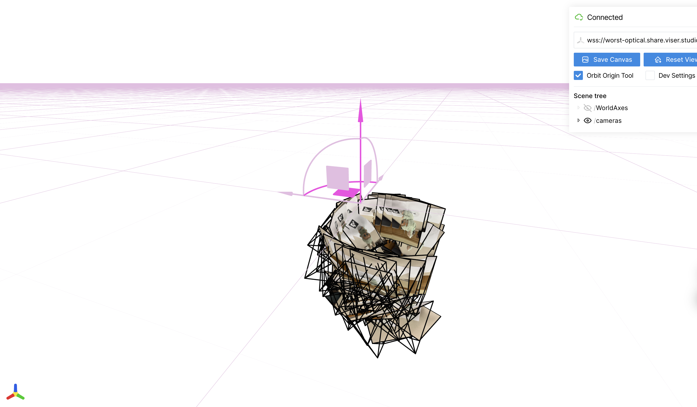
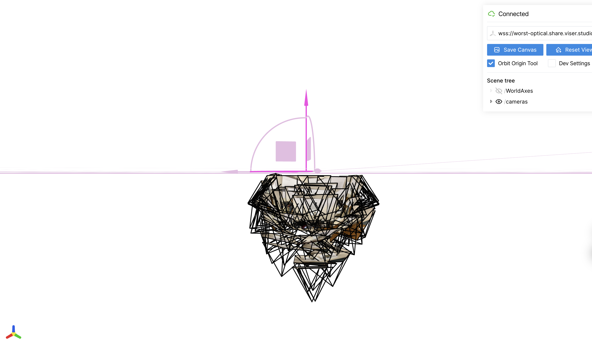
This section implements a neural field to fit a 2D image, exploring different architectures and positional encoding frequencies.
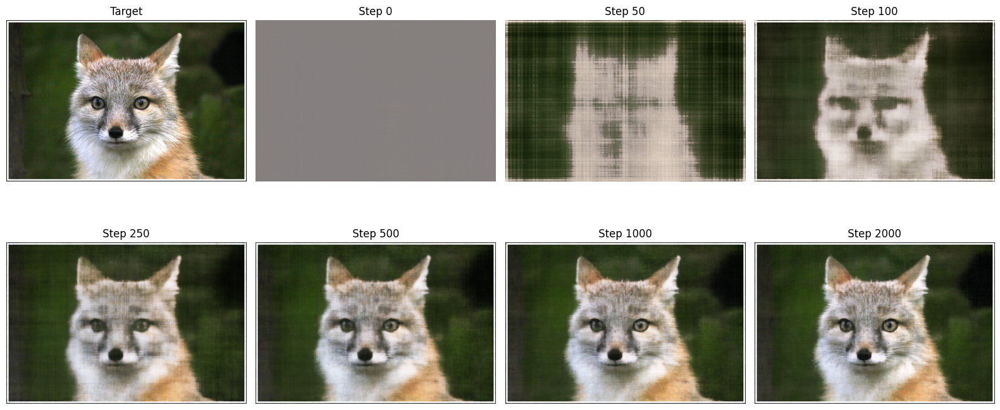
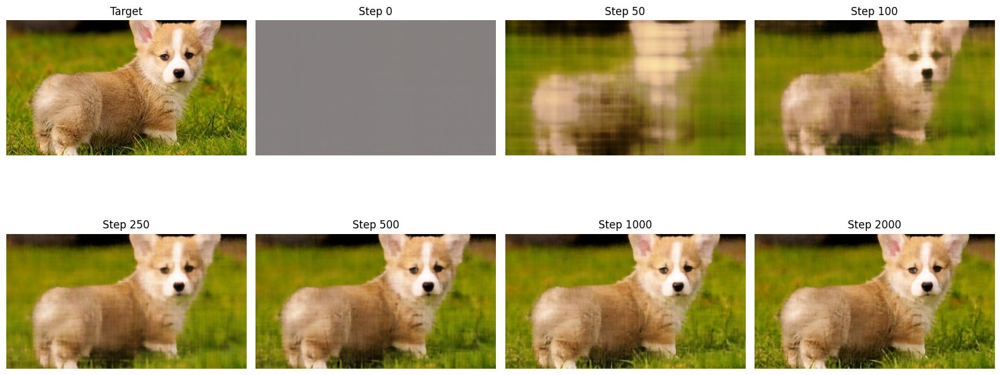
Comparison of results across different positional encoding frequencies and network widths:
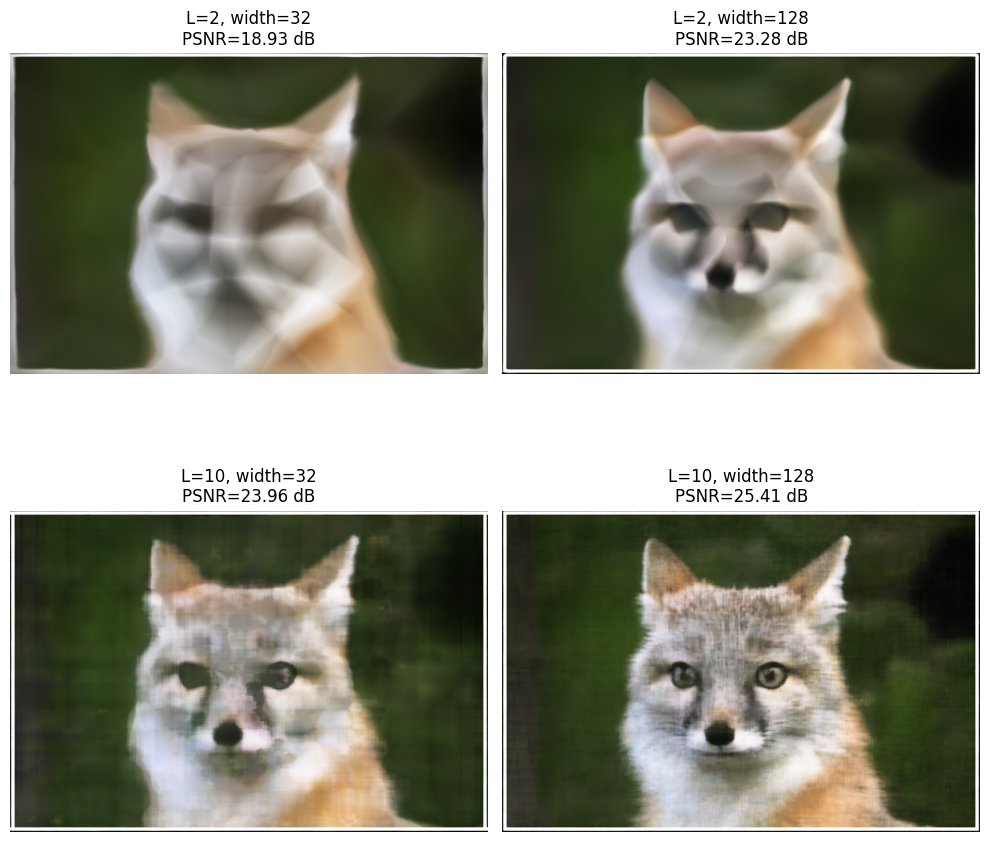
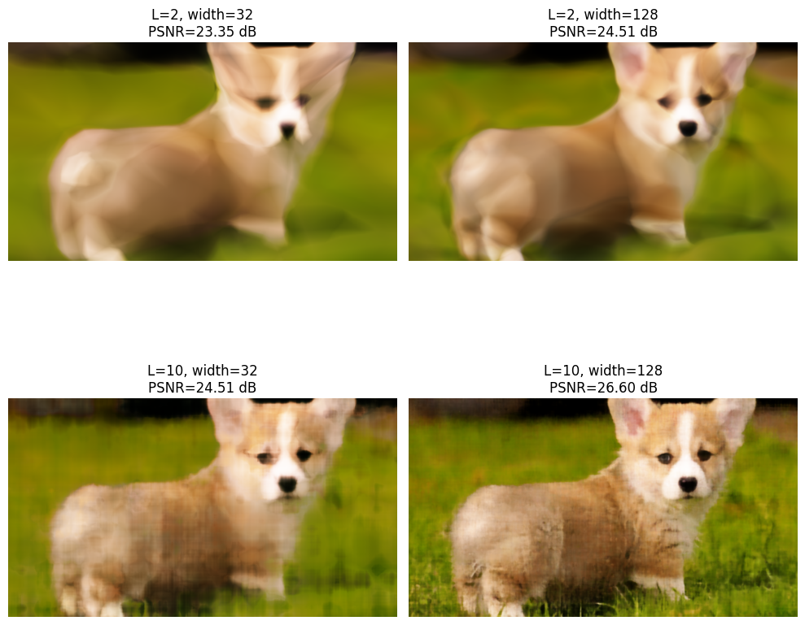
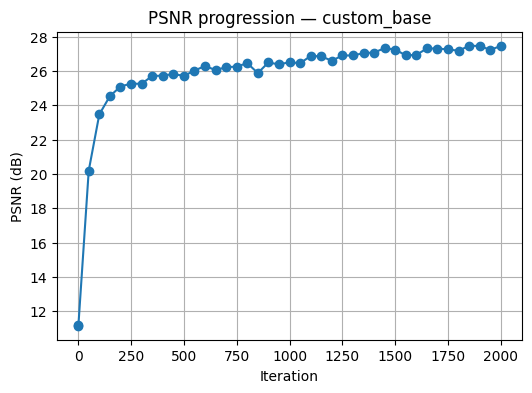
This section implements a Neural Radiance Field (NeRF) to reconstruct 3D scenes from multi-view images.
I first implemented a camera_to_world(c2w, x_c) function that takes 3D points in camera coordinates, converts them to homogeneous coordinates, and multiplies by the 4×4 camera-to-world matrix. I verified correctness by checking that x_c ≈ camera_to_world(inv(c2w), camera_to_world(c2w, x_c)) for both single points and batched inputs using PyTorch tensors.
Next, I implemented pixel_to_camera(K, uv, s), which inverts the pinhole model. I build homogeneous pixel coordinates [u,v,1], apply K⁻¹, and multiply by the depth s so the result lies on the correct plane in camera space. Finally, pixel_to_ray(K, c2w, uv) uses pixel_to_camera with depth 1, transforms the point to world space, and defines the ray origin as the camera position (the translation of c2w) and the ray direction as the normalized vector from origin to that world-space point. This all supports batched uv inputs.
I built a RaysData(images, K, c2ws) class that precomputes a grid of pixel coordinates for all images, adds a 0.5 offset to move from pixel corners to centers, and flattens them so I can sample rays globally across all training views. sample_rays(N) randomly selects N pixel indices, recovers their image index and (u, v), converts them into ray origins and directions using the functions from Part 2.1, and returns (rays_o, rays_d, pixel_colors).
For sampling points along a ray, I implemented sample_points_on_rays(rays_o, rays_d, near, far, n_samples, perturb). It creates uniformly spaced depths t between near and far, and optionally adds stratified noise within each interval during training. The 3D samples are then computed as x = rays_o + t * rays_d, giving a tensor of shape (N_rays, n_samples, 3).
My main dataloader for training is the RaysData object together with sample_points_on_rays. At each training iteration, I call dataset.sample_rays(batch_size) to get random rays from all training images, then immediately sample 3D points along those rays.
To verify correctness, I used the provided viser visualization code. I passed in my rays_o, rays_d, and sampled points and overlaid them with the camera frustums built from c2ws_train. I checked both random rays and rays from a specific region of the image (e.g., top-left) to ensure that the directions are not flipped and all samples lie within the appropriate camera frustum.
I implemented a NeRF-style MLP that takes 3D world coordinates and ray directions as input and outputs both density σ and RGB color. Before feeding points and directions into the network, I apply separate positional encodings to positions (with higher frequency L_pos) and directions (with lower frequency L_dir), and concatenate the resulting features.
The MLP itself has 8 fully connected layers with ReLU activations and a skip connection: after four layers I concatenate the encoded position back into the hidden activations. From the final hidden features, one linear head predicts density (passed through ReLU to enforce non-negativity), and another branch combines features with encoded directions to predict RGB (passed through a Sigmoid to keep colors in [0,1]). The output shapes are (N_rays, N_samples, 1) for σ and (N_rays, N_samples, 3) for RGB.
I implemented volrend(sigmas, rgbs, t_vals) to perform differentiable volume rendering along each ray. First, I compute the deltas between consecutive depths in t_vals, then convert densities to alpha values using αᵢ = 1 − exp(−σᵢΔᵢ). I then compute the cumulative transmittance Tᵢ via a shifted cumprod over (1 - α) and get per-sample weights wᵢ = Tᵢαᵢ. The final rendered color for each ray is the weighted sum Σᵢwᵢcᵢ. I verified my implementation using the provided random test (with fixed seed) to match the reference tensor.
For training, I repeatedly: (1) sample 10,000 rays, (2) sample 64 points per ray between near and far, (3) run them through the NeRF, (4) volume-render to get predicted colors, and (5) compute an MSE loss against the ground-truth pixel colors. I use Adam with learning rate 5×10⁻⁴. Periodically, I render full validation images from c2ws_val, compute PSNR on the validation set, and save intermediate predicted images to visualize convergence.
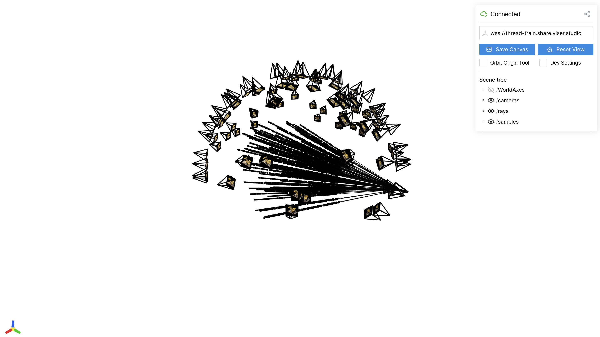
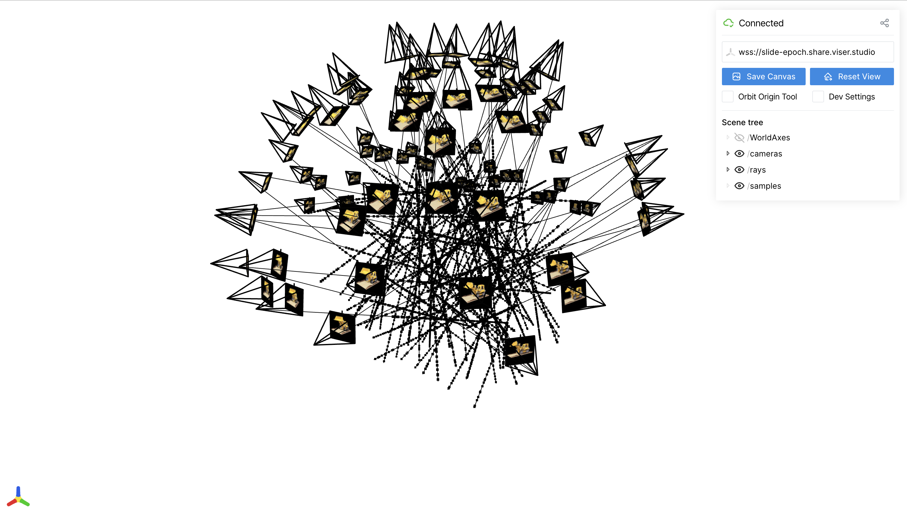
Validation progress visualization showing predicted images across training iterations for the Lego scene:
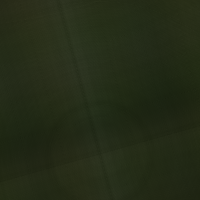
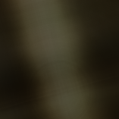
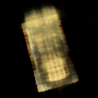
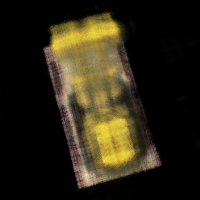
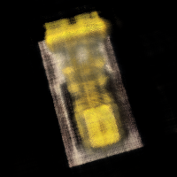
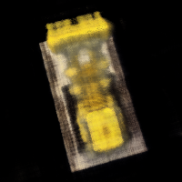
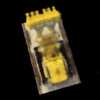
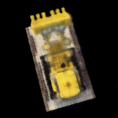
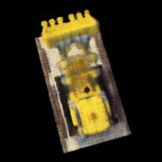
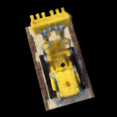
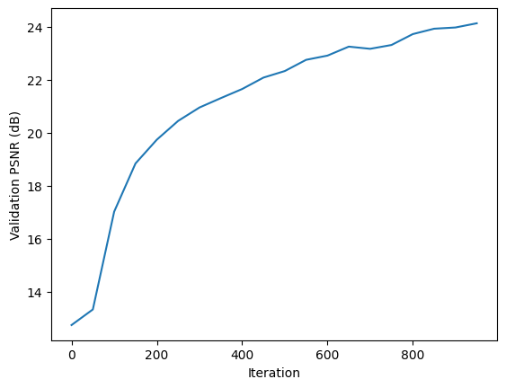
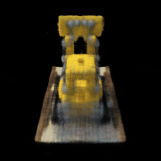
Note: Refresh the page to see the animation again if it stops.
This section demonstrates training a NeRF on custom data with novel view synthesis.
Comparison of novel view synthesis at different training iterations:
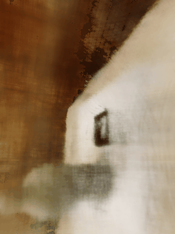
Note: Refresh page to see animation again
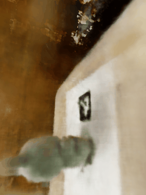
Note: Refresh page to see animation again
To train a NeRF on my own object ("Labubu"), I first completed a full calibration pipeline: (1) camera intrinsics from ArUco tags, (2) camera poses via solvePnP for each object image, (3) undistortion of all images using the recovered distortion coefficients, and (4) resizing all undistorted images to a smaller resolution suitable for training. Because NeRF assumes a perfect pinhole camera, removing distortion and correctly scaling the intrinsics were essential for stable optimization.
I reused the same NeRF MLP architecture and volume-rendering code from Part 2.4 and 2.5, but several hyperparameters needed to be tuned specifically for my real-world dataset. The key difference from the Lego dataset was the physical scale and the distance between the phone camera and the object. When I examined the PnP poses, I noticed that the camera was only ~5–10 cm from the object in most shots. Because of this, using the default near=2.0 and far=6.0 from the Lego example produced extremely poor results — almost all sampled points were far outside the actual scene volume. I adjusted these bounds to near = 0.01 and far = 0.7, which tightly matched the real capture geometry. After I changed the near/far plane to match the actual object scale, the network converged significantly faster and the rays correctly intersected the object instead of empty space.
I experimented with two different numbers of samples per ray: 32 and 64. Using 32 samples trained noticeably faster and allowed me to debug the pipeline (ray generation, poses, intrinsics) more quickly, but the reconstructions were blurry and lacked fine details—especially around edges and texture patterns. When I increased to 64 samples, the training time roughly doubled but the quality improved dramatically. With 64 samples, the NeRF was able to recover sharper silhouettes, better surface color consistency, and finer geometric detail. Using 64 samples for 1,000 iterations produced a passable NeRF, but the model continued improving beyond that. Training up to 10,000 iterations gave a noticeably clearer reconstruction and a much higher PSNR curve on my validation set.
During training, I periodically rendered an intermediate image from a fixed camera pose to visually track convergence. As expected, early iterations produced noisy, foggy outputs, but after a few hundred iterations the object became recognizable, and after several thousand iterations the model captured most of the object's geometry and textures.
Finally, I generated novel views by constructing a circular trajectory around the object. I used a look_at_origin helper to orient each camera toward the center, and applied a rotation to smoothly sweep around the object. For each synthetic camera pose, I rendered a full-resolution frame using my trained NeRF and then saved the sequence as a GIF. This produced a complete 360° orbit visualization of my reconstructed object.
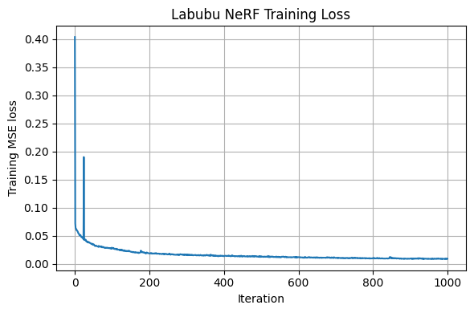
Progression of renders during training at different iterations:
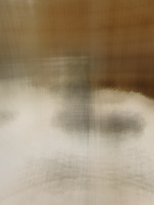
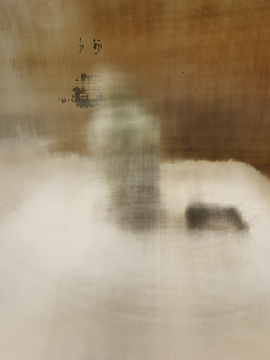
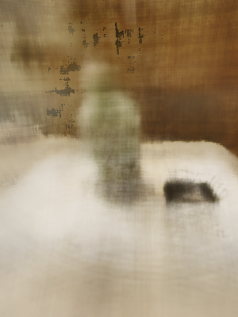
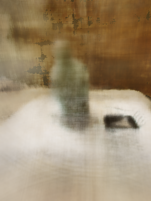
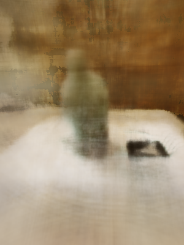
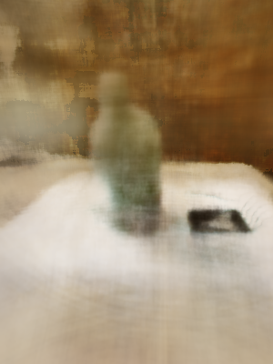
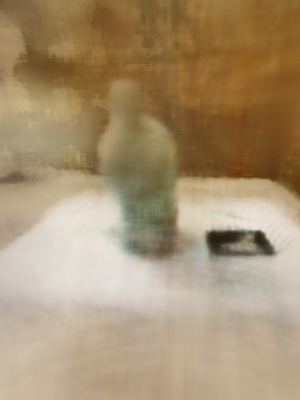